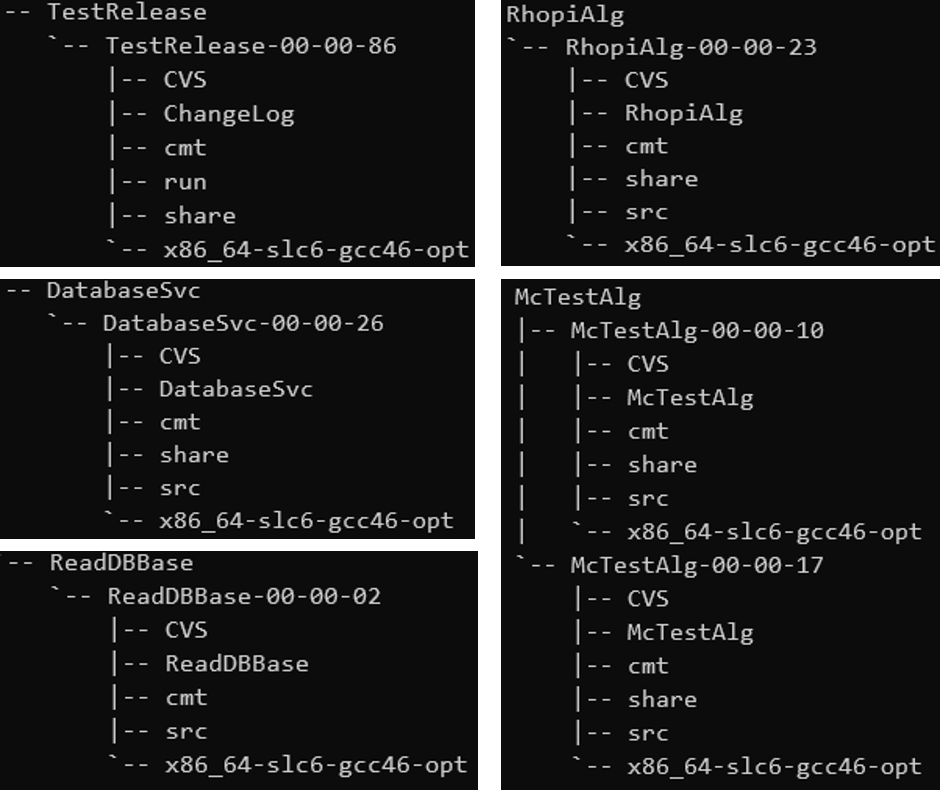

BESIII（Beijing Spectrometer III）是安装在北京正负电子对撞机上的第三代粒子探测器。北京正负电子对撞机（BEPC）坐落于北京市石景山区中国科学院高能物理研究 所( Institute of High Energy Physics CAS，简称IHEP)院内，BEPC始建于1984年，在1988年实现了第一次正负电子对撞成功，它是目前世界上τ-粲能区亮度最高的正负电子对撞机。 北京谱仪第一代(BESI)于1989年正式开始运行，经过升级改造，于1998年再次运行，称为北京谱仪第二代(BESII)，为了顺应BEPC的升级改造，2004年北京谱仪再次升级， 使用国际先进探测技术使得精度得到大幅升高，2009年正式运行，称为北京谱仪第三代(BESIII)。1991年5月北京谱仪国际合作组宣布成立，以BES合作组命名，北京谱仪升级之后， 合作组名称随之称为BESII合作组、BESIII合作组。我们所说的BESIII既可以指北京谱仪第三代，也可以指BESIII合作组。
BESIII探测得粒子数据以电信号的形式存在，我们无法直接对着一堆电信号得出令人信服的物理结果，所以仅仅有BEPC和BESIII还不完整，需要有处理实验数据的软件工具。北京谱仪离线软件系统 （BESIII Offline Software System，BOSS）就是因此而编写。理论上我们可以像安装微信一样把它安装到自己的电脑，然后向BESIII合作组要一些原始数据在自己电脑上处理， 但是高能物理数据动辄以亿为单位，自己的小电脑恐怕需要CPU满载、内存满载并且花费几天或者几个星期来处理数据。你应该不忍心自己的电脑这样运行吧？！
所幸，中国科学院高能物理研究所已经找了一台大大大大的电脑来做数据处理这件事，这台大电脑叫做“集群"，它运行Linux操作系统,有135000个CPU核、20PB的存储空间， 上面安装了包括BOSS在内的必要软件，我们可以通过申请一个个人账号，通过远程登录，在集群上进行程序调试、数据处理。
本文将介绍集群的申请方法、账号说明、环境设置、作业提交等方面的内容。
技术报告 - [高能所计算环境使用手册] 已经把集群的申请、使用等各个方面讲得非常清楚了，如果你对此手册非常熟悉， 那么下面的内容可以完全不看。
申请方法有不是唯一的，但是为了方便我们采用两步法。
注意：所有申请方法都需要负责人同意，也就是说不是任何人都能获取账号，要么自己的导师同意、要么联系到高能所老师同意。
计算集群只是高能所一个服务而已，通过获取统一认证账号，可以获得高能所更多服务。
打开https://login.ihep.ac.cn/填写相关内容即可。
习惯上把集群账号称为AFS账号。等统一认证账号通过以后，从https://login.ihep.ac.cn/登录， 可以看到页面内有“账号安全”一栏，其下有：密保邮箱、VPN服务、申请集群账号。点击申请集群账号，填写表单、提交、等待即可。
正常情况，过几天之后，你将会收到高能所计算中心发来的邮件，邮件内包含登录账号、密码等。至此，申请工作正式完成
计算集群使用Linux操作系统，但是并非完全一致，有SLC6和SLC7两个版本的操作系统，逐渐SLC7是主流，目前我们还是以SLC6为例。
远程登录的工具是ssh，提供ssh的有很多，windows的cmd、powershell都提供，但是这两个实在难看还难用。技术报告手册里面推荐了好几个，这里推荐使用xshell
（1）打开xshell之后，需要填写以下内容：名称：随便起个名字，主机：lxslc6.ihep.ac.cn，端口：22 。这些就够了
（2）点击连接，然后会让输入用户名、密码。把邮件发来的用户名密码填上去，点击记住用户名、密码，以后更方便登录。
正常情况上述方法就成功登录计算集群了。
打开终端，输入 ssh username@lxslc6.ihep.ac.cn ,然后根据提示输入密码。嗯，就是这么简单。
Linux和macOS下每次都需要输入密码，使用秘钥登录可以免除这个麻烦，相关方法请百度，这里以后我再补充。
计算集群给BESIII实验用户提供了5个存储目录，这些目录空间、作用各不相同。
/afs/ihep.ac.cn/users/username : 500MB 登录后默认进入的目录
/scratchfs/bes/username : 50GB
/scratchfs/bes/username : 500GB （官方说只保留两周，但实际上一直在保存）
/workfs/bes/username : 5GB
/home/bes/userdata/username : 200MB
一般而言，前面三个目录是最常用、最有用和最够用的，后面两个几乎没用过。
注意：所有目录存储时都不能超过限额。经常使用 du -sh 查看存储情况。
第一次登录集群时，上述五个目录都是空的，所以设置环境后再说目录结构。
/afs/ihep.ac.cn/bes3/offline/Boss/ 存储了BOSS版本从6.0.0到最新版(目前是7.0.5)的所有发行版，你可以一览壮观。
/afs/ihep.ac.cn/bes3/offline/Boss/7.0.5 存储了BOSS 7.0.5版本的功能模块。
/待写 存储了BESIII探测器获取的真实数据
/待写 存储了经过重建之后的数据
/待写 存储了高能所对应真实数据所做的模拟的数据
BOSS主页有详细的过程，进入页面需要使用统一认证账号。 设置环境的页面。 但是里面 $cmt co TestRelease 有问题，详情看下面的视频手把手设置环境。如果您有幸到高能所可以找马秋梅老师更改一下。
参见视频，后续我会精简视频，争取缩短视频时间（有更多三连我会更快更新嗷嗷嗷）。
模拟，就是根据加速器真实的情况，人为地设置一定的对撞条件、探测环境，使用软件模拟粒子的对撞、衰变和探测。模拟可以用来分析本底、验证实际情况的可靠性。
BOSS内置Geant4等软件包进行模拟操作，假设环境设置在的 /afs/ihep.ac.cn/users/username 目录下，具体操作如下：
cd ~/workarea/TestRelease/TestRelease-00-00-86/run
boss.exe jobOptions_sim.txt 即可
说明：jobOptions_sim.txt 里面写了模拟的条件、模拟数量等，修改内容即可改变模拟条件；
jobOptions_sim.txt 需要引入衰变比卡，用来控制粒子衰变产物与分支比，即当前目录下的 rhopi.dec 文件；
模拟的结果写入当前目录的 psip.rtraw 文件。
重建，就是将模拟输出的 *rtraw 文件重建得到可供分析的文件，或者将探测器得到的 *raw 格式的真实数据重建为可供分析的文件。
假设环境设置在的 /afs/ihep.ac.cn/users/username 目录下，具体操作如下：
cd ~/workarea/TestRelease/TestRelease-00-00-86/run
boss.exe jobOptions_rec.txt 即可
说明：jobOptions_rec.txt 里面引入了模拟得到的文件：*rtraw（也可以是真实数据*raw）、定义了输出文件：*dst（信息简略但实用）或者*rec(信息详细但少用);
jobOptions_rec.txt 规定了重建数量；
分析，就是将重建之后的数据做条件选择，得到符合要求的数据。
假设环境设置在的 /afs/ihep.ac.cn/users/username 目录下，具体操作如下：
cd ~/workarea/TestRelease/TestRelease-00-00-86/run
boss.exe jobOptions_ana_rhopi.txt 即可
说明：jobOptions_ana_rhopi.txt 里面引入了重建得到的文件：*dst（也可以是*rec）、定义了输出文件：*root（对，就是ROOT软件能读取的文件类型);
jobOptions_ana_rhopi.txt 规定了分析数量；
jobOptions_ana_rhopi.txt 里面引入了分析算法包，这个算法包规定了粒子的选取条件（分析数据全靠它！）
上面说到“分析算法包”，也说到“cd ~/workarea/TestRelease/TestRelease-00-00-86/run”，什么叫“包”，“包”的目录结构是什么？
BOSS的每个功能模块是相互独立的，实现功能模块的一组代码叫做算法包（我的理解）。 BOSS采用CVS做版本控制（目前最流行的是git了），cmt作为配置工具，算法包需要符合这两个软件的目录结构要求。
典型的算法包：TestRelease（测试安装是否成功的例子）、DatabaseSvc（采用哪个数据库）、ReadDBBase（读取数据库）、 Simulation（模拟结果画图）等等很多。
基本结构：
粗略一看，这几个包内都有CVS、cmt、share、x86_64-slc6-gcc-opt，上一层目录是AAA-00-00-86这种形式，上两层目录就是AAA了。
排除TestRelease之后仔细观察，基本每个包都是六个文件，其中一个文件和软件包名称相同，其他还多个src。AAA-00-00-86表示版本号，同一个软件包内可以存着多个版本。
一般情况，算法包的实现都是通过src内的*.cxx文件，修改cxx文件后在cmt内编译后就能使得算法包生效。
这些特征用文字不太能说清楚，相信你仔细看看就能观察出来。
集群是很多很多CPU核的系统，一部分CPU只用于登录，称为登录节点；大部分CPU用于计算，称为计算节点。模拟、重建、分析的计算量很大的话，在登录节点运行就很不合适，需要将他们提交到计算节点运行，并且把计算结果返回到我们的目录。
用下面的图表示一下这个过程
BESIII实验支持HTCondor作业，提交作业方法很简单，只需要把boss.exe换成boss.condor
上面是针对BESIII实验做的优化，更一般地，有下面方法：
（1）编写提交作业的脚本：比如建个sub文件，里面写入boss.exe sim.txt
（2）添加可执行权限：chmod +x sub
（3）提交作业：hep_sub -g physics sub
（4）查看自己作业状态：hep_q -u
也很方便，不是吗？